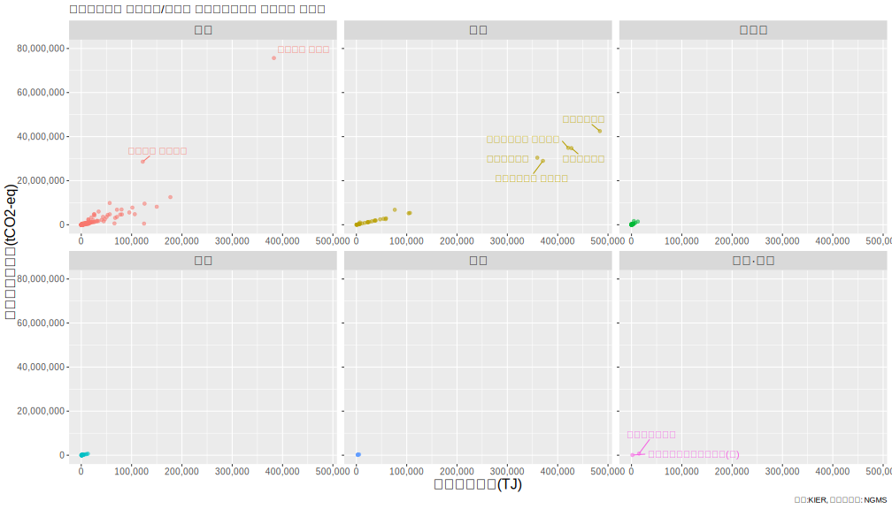
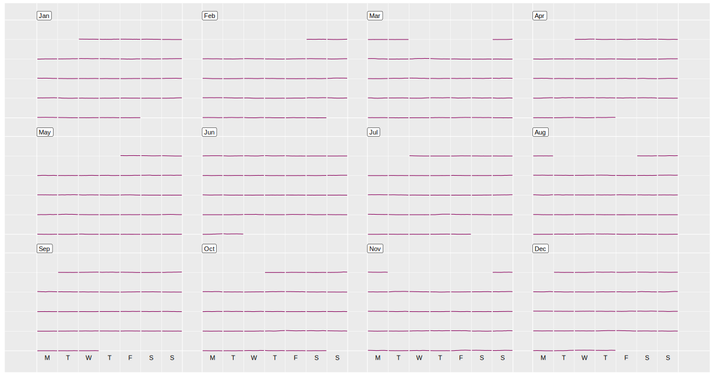

온실가스 할당대상업체 (2021.12.30 명세서 기준) 분석
명세서배출량 통계 - 2020년도 명세서 주요정보 - 업체배출량
업체별 명세서 주요 정보를 보면, 할당대상업체와 목표관리 업체로 구분된다
기업 수는 할당대상업체 607개, 목표관리업체 448개이다.
기업 수는 구분별로 비등비등하지만 온실가스 배출량은 분석해보면 큰 차이가 보인다
전체 온실가스 배출량은 587,516,989 tCO2 이며,
할당대상업체 95.8%, 목표제시업체 4.2%로 구분된다
할당대상업체에서 온실가스 감축이 중요하겠군..
할당대상업체만 분석해보자(온실가스 배출량의 절대량을 줄이기 위해서는 할당대상업체만 집중 공략 필요)
할당대상업체 607개 중에서 부문별로 파악해보자
산업 453, 전환 35, 폐기물 72, 건물, 39, 수송 6, 공공/기타 2개로 구성된다.
산업(55.5%)과 전환(36.8%) 부문의 합이 할당된 온실가스 배출량의 92.4%를 차지한다

부문별로 그래프를 세분화해서 보자
예상했던 대로 산업과 전환분야에서만 온실가스 배출량이 높은 수치들이 확인된다.
그 외의 건물, 수송, 폐기물, 공공/기타 부문은 잘 보이지도 않는다.

2. 산업과 전환 부문이 온실가스 할당량의 92.4%를 차지한다. -> 산업과 전환만 하나의 그래프에 놓고 보자!!!
아래 그래프는 에너지사용량(TJ)과 온실가스배출량(CO2eq)의 관계를 나타낸다.
x축은 에너지사용량을 나타내며, 전환 부문의 발전사 5곳과 포스코의 에너지 사용량이 타 업체보다 월등히 높은 것을 확인할 수 있다.
주요 발전사 5곳의 온실가스 배출량은 31.5%를 차지하며, 막대한 에너지를 사용하는 발전사의 성격을 보여준다.
y축은 온실가스 배출량을 나타내며, 포스코 업체 1곳의 온실가스 배출량이 13.9%를 차지하는 것을 확인할 수 있다.
발전사 5곳의 온싱가스 배출량에 이어 현대제철의 배출량은 5.3%를 차지한다.
그 외에 주요 배출 기업으로 삼성전자, S-Oil, 쌍용씨앤이, LG화학, 삼표시멘트, 롯데케미칼 등을 확인할 수 있다

온실가스 배출 상위 30개 업체가 차지하는 온실가스 배출량은 전체의 71%를 차지함
산업과 전환 분야의 업체가 대부분으로 파악된다.
3. 한국표준산업분류(KSIC)* 별로 배출량을 파악해보자
경제적 특성을 객관적으로 반영하고, 업종간 기준을 통일적으로 적용하도록 최신 통계 기준인
제10차 한국표준산업분류의 소분류 기준으로 분류한다.
온실가스 배출이 많은 업종은 전기업(34.3%), 1차 철강 제조업(19.2%), 기초화학물질 제조업(8.1%),
시멘트, 석회 및 플라스터 제조업(6.5%), 석유 정제품 제조업(5.3%), 반도체 제조업(3.4%) 등이 있다.
*KSIC : Korean Standard Industrial Classification
4. tCO2eq/TJ 에너지소비당 온실가스 배출량 보자
에너지소비당 온실가스 배출량은 의외의 결과가 보인다.
ㅇㅇㅇㅇ,
ㅇㅇㅇ.

5. LNG 전력거래량
아래 이미지는 LNG 로 생산된 전력량과 그 패턴을 나타낸다.
LNG 발전은 석탄화력발전에 비해 미세먼지와 온실가스 배출을 크게 줄일 수 있는 장점을 갖고 있으며,
변동성이 큰 태양광/풍력 같은 신재생에너지의 한계를 보완하는 발전원으로 주목받고 있다
LNG 발전은 완전 정지 상태에서 최대 출력까지 도달하는 데 30분도 채 걸리지 않아 전력 변동성에 대처할 수 있는 에너지원으로 평가받는다
위에서 살펴본 유연탄(석탄화력), 원자력과는 다르게 시간별로 변동하는 수요에 대응하는 것을 확인할 수 있다.

6. 태양광 전력거래량
태양광 발전량은 어떻게 그려질까?
아래 이미지는 2020년 한 해 동안 태양광으로 생산된 전력량과 그 패턴을 나타낸다.
위에서 보았던 유연탄, LNG, 원자력에 비해 정말 미미하게 나타난다.
잘 보이진 않지만 낮시간에 발전량이 미미하게 증가하는 것을 파악할 수 있다.
태양광은 전력거래소와의 거래가 아닌 한국전력과의 PPA(Power Purchase Agreement, 전력구입계약)**를 통해 직접 거래되는 경우가 많기에,
지금 보여지는 발전량이 대한민국 전체 태양광 발전량과는 다를 수 있다.
**PPA 신청대상: 현행 전기사업법상 한전에 직접 전력을 판매하고자 하는 발전설비용량 1,000kW 이하
신재생에너지 발전사업자 및 자가용 신재생에너지 발전 설비 설치자

7. 풍력 전력거래량
풍력 발전량은 어떻게 그려질까?
아래 이미지는 2020년 한 해 동안 풍력으로 생산된 전력량과 그 패턴을 나타낸다.
거의 보이지 않는다... 태양광은 낮시간만 발전하기 때문에 그 패턴이 풍력은 그마저도 확인이 어렵다.

8. 총 전력거래량
2020년 총 전력거래량 달력을 히트맵을 적용하여 나타냈다.붉은색이 진할수록 전력거래량이 많음을 보여준다.
주중과 주말을 비교했을 때 주중의 전력거래량이 많은 것이 월과 관계 없이 파악되며,
전력소비가 많은 동절기(1, 12월), 하절기(8,9)월에 전력거래량이 증가하는 것을 확인할 수 있다.